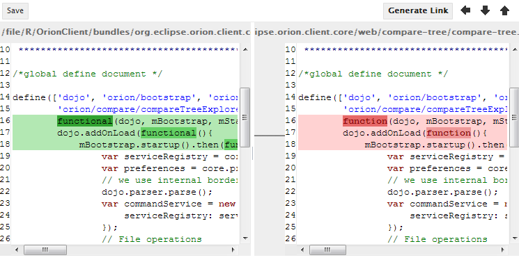
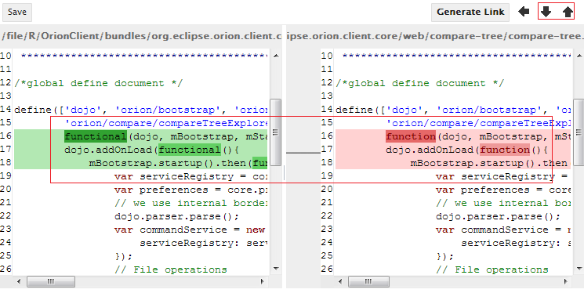
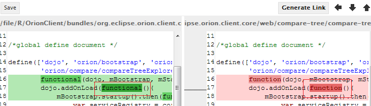
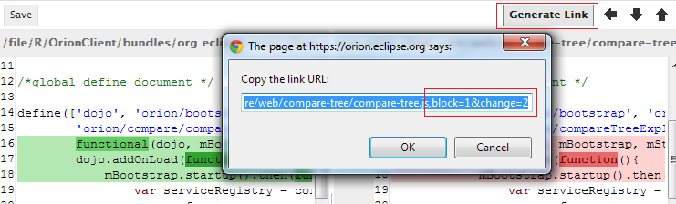
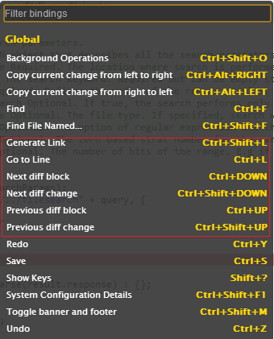

The Compare page shows a comparison between two states of a single file or just two files. The right hand side is always read only while the left hand side can be write-able depending on how the compare page is brought up. You can browse through individual differences using the Next Diff and Previous Diff buttons at the top right hand side of the page. If the file on the left is write-able, you can merge changes from the right hand side using the Copy Current Change From Right to Left button, or edit the file directly. Once you have finished editing, hit Ctrl+S or click Save in the tool bar to save your changes.

There are two levels of differences: block and word.
The block level shows the difference between two paragraphs. Use the Next Diff and Previous Diff buttons to navigate among blocks. Or use CTRL + UP/DOWN arrow keys to do the same thing.

The word level shows the different words within a block. There is no buttons in the tool bar but you can use CTRL + SHIFT + UP/DOWN arrow keys to see next/previous different words.

If the left hand side is write-able, you can use the Copy Current Change From Right to Left button to merge the current diff block. The merging does not save the left hand side until you save it manually.
If you are navigating to a certain difference block&word and want to share the position of the difference, you can generate the compare URL with the current position. Note that the URL contains not only the file URL but also the block and word parameters.

In addition to some common editor key bindings for the left hand side, there are several specific key bindings for the diff navigation. You can find them by clicking on you user options then click on keyboard shortcuts or use SHIFT+? keys. But note that Ctrl+DOWN and Ctrl+UP are already consumed by the editor if the current focus is in one of the editors. You have to click on somewhere outside of the editors in order to use those two key bindings for diff navigation.

This document is maintained in a collaborative wiki. If you wish to update or modify this document please visit http://wiki.eclipse.org/Orion/Documentation/User_Guide/Reference/Compare_page